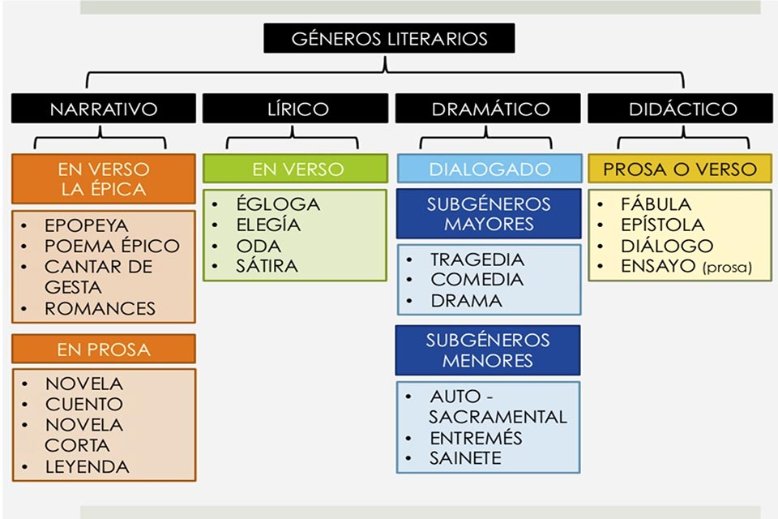

Géneros Literarios

Géneros Literarios
Géneros Literarios
Narrativo
Lírico
Dramático
Didáctico
En verso la épica
Es prosa
En verso
Dialogado
Prosa o Verso
Subgénero Mayor
Subgénero Menor
Epopeya
Poema épico
Cantar de gesta
Romances
Novela
Cuento
Novela Corta
Leyenda
Égloga
Elegia
Oda
Sátira
Tragedia
Comedia
Drama
AutoSacramental
Entremés
Sainase
Fábula
Epistola
Diálogo
Ensayo Prosa
Narrativo
En Verso la épica
Epopeya
Poema épico
Cantar de gesta
Romances
Prosa
Novela
Cuento
Novela Corta
Leyenda
Lírico
En Verso
Égloga
Elegia
Oda
Sátira
Dramático
Dialogado
Subg Mayores
Tragedia
Comedia
Drama
Subg Menores
AutoSacramental
Entremés
Sainase
Didáctico
Prosa o verso
Fábula
Epistola
Diálogo
Ensayo Prosa